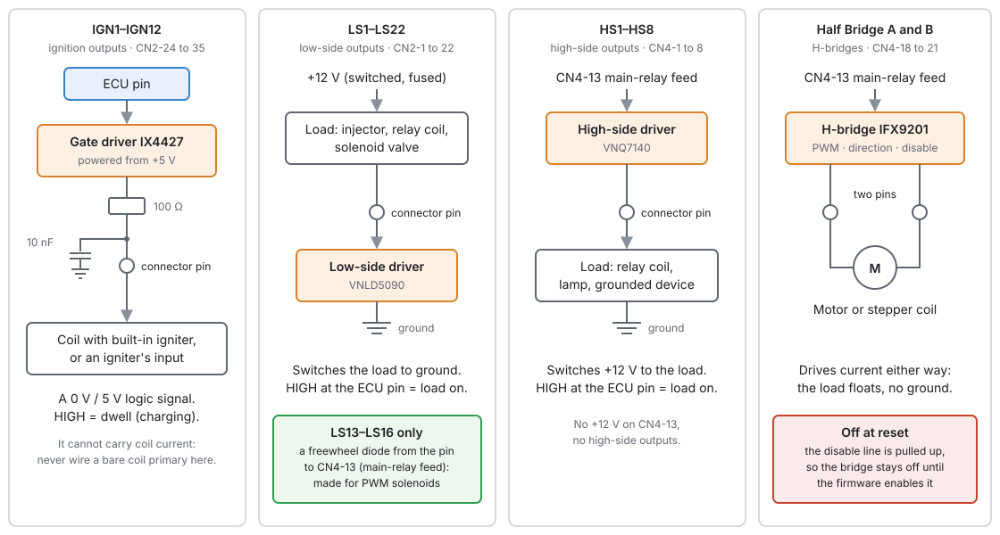
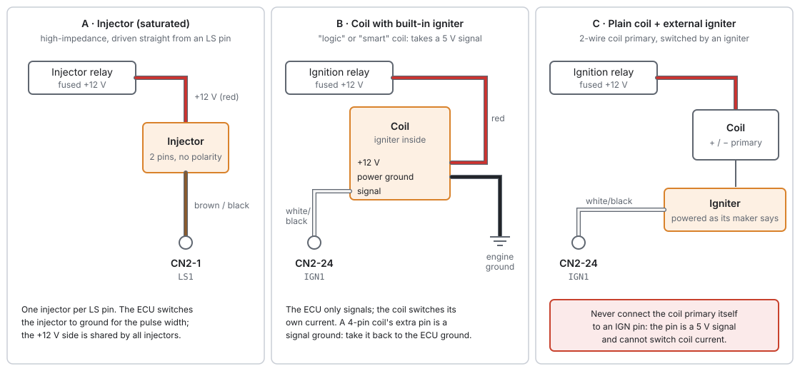
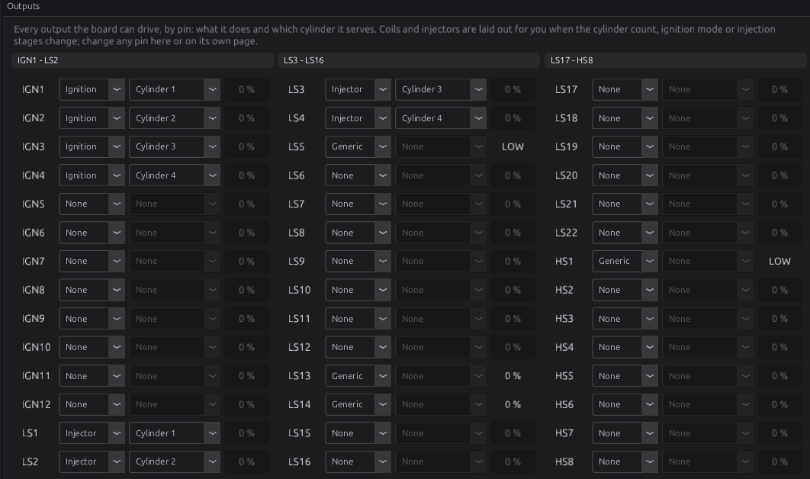
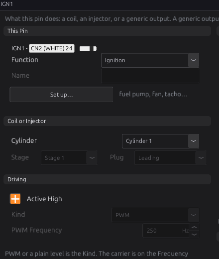
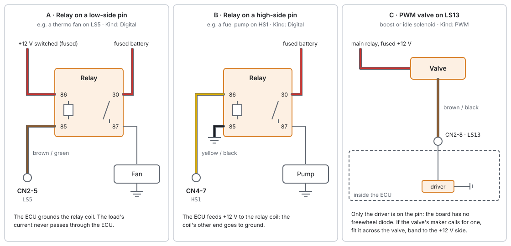
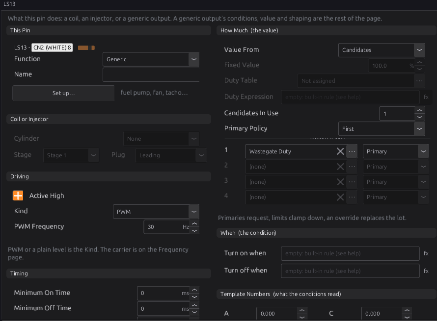
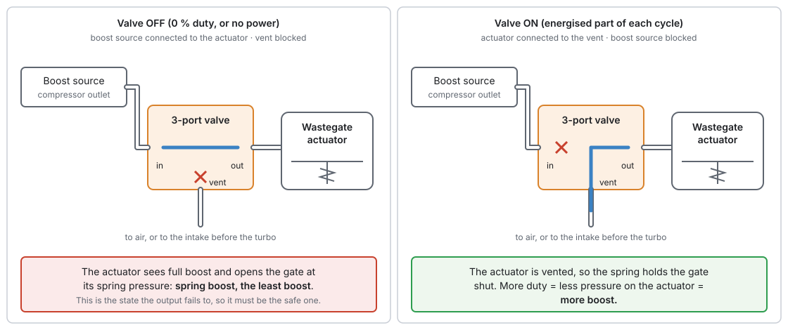
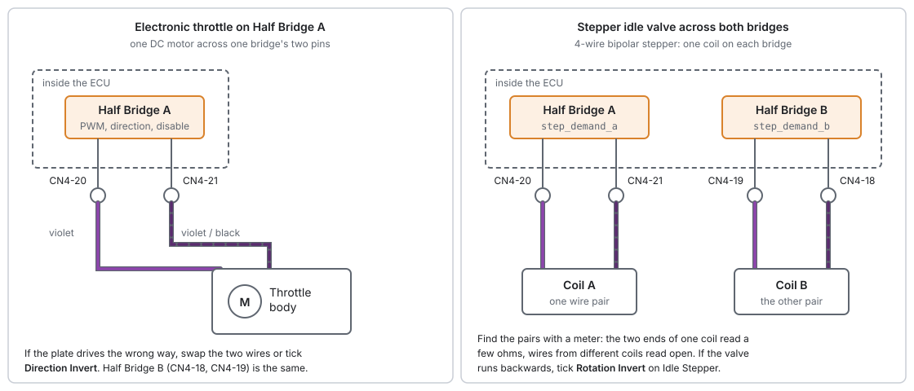
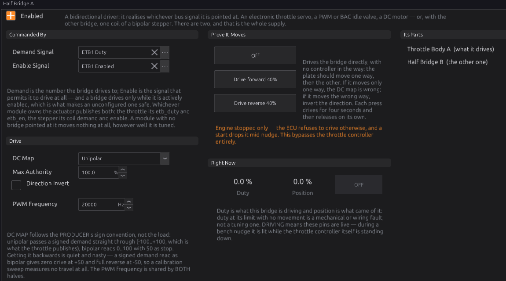
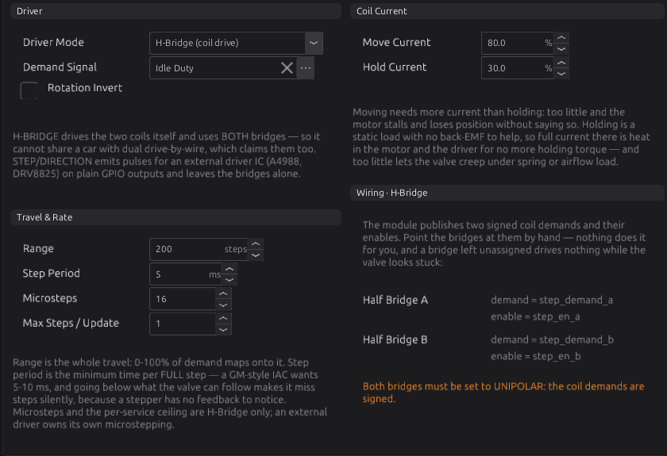

Wiring outputs¶
Basic → Advanced
In one sentence: how to connect injectors, coils, relays, PWM valves, motors and stepper valves to the ECU's outputs, what each kind of output can and cannot drive, and how to prove each one works before the engine runs.
Overview¶
Basic
An output is a pin the ECU switches to make something happen: an injector opens, a coil sparks, a relay clicks, a valve moves. The jaytek_v1 board has four kinds of output stage, and each kind suits different loads:
| Kind | How many | Connector pins | What it does | Suits |
|---|---|---|---|---|
| IGN (ignition) | 12 | CN2-24 to CN2-35 | Sends a 0 V / 5 V logic signal | Coils with a built-in igniter, external igniters, logic inputs |
| LS (low-side) | 22 | CN2-1 to CN2-22 (not in order) | Switches a load to ground | Injectors, relay coils, solenoid valves |
| HS (high-side) | 8 | CN4-1 to CN4-8 (not in order) | Switches +12 V to a load | Relay coils and loads whose other end is grounded |
| Half Bridge (H-bridge) | 2 | CN4-18 to CN4-21 | Drives current either way through a load | Electronic throttle, motorised wastegate, stepper valve |
This chapter is about the wiring: which pin, which wire, where the +12 V and the ground come from, and what must never be connected. Choosing what an output does is in chapter 18, and each engine function has its own chapter (fuel 19, ignition 20, idle 21, electronic throttle 22, boost 24).
Chapter 7 has the full pinout; chapter 10 covers the power feeds and grounds these outputs rely on.
Outputs move fuel, spark and air
An injector held open floods a cylinder with fuel. A coil held on overheats. An electronic throttle driven the wrong way opens the throttle. Wire with the ECU unplugged, check every pin against the tables here, and test each output on the bench (the end of this chapter) before you crank the engine.
Concepts¶
The four output stages¶
Basic

-
IGN pins come from a gate driver chip (IX4427) powered from the board's +5 V, through a 100 Ω resistor, with a 10 nF capacitor to ground at the pin. The pin swings between 0 V and 5 V. That is a signal, not a power output: it tells a coil's built-in igniter, or a separate igniter module, when to charge and when to fire. It cannot carry the several amps a coil primary draws.
-
LS pins come from low-side switches (VNLD5090). The load's other end goes to +12 V; when the output is on, the switch connects the pin to ground and current flows.
-
HS pins come from high-side switches (VNQ7140). They take their +12 V from CN4-13, the main-relay feed, and switch it out to the pin. The load's other end goes to ground.
-
Half bridges (IFX9201) also take their supply from CN4-13. Each has two output pins and can drive either one high and the other low, so current flows through the load in either direction. The ECU drives each bridge with three internal lines (PWM, direction, disable); you wire only the two output pins.
Low side and high side¶
Basic
A load needs a supply and a return. Which one the ECU switches decides how you wire it:
- On an LS pin, wire the load's +12 V side to a fused, switched +12 V (usually from a relay), and its other side to the LS pin. The ECU completes the circuit to ground.
- On an HS pin, wire the load's ground side to ground, and its other side to the HS pin. The ECU supplies the +12 V.
Most engine loads (injectors, idle valves, boost solenoids) are traditionally switched on the ground side, so the LS pins are where most of your wiring goes. The HS pins suit loads that are already grounded, such as a relay whose coil has one end on the chassis.
What each pin can be¶
Intermediate
In the studio, every IGN, LS and HS pin is one row on Configuration ▸ Electrical ▸ Outputs, in board order: IGN1–IGN12, then LS1–LS22, then HS1–HS8. Each row has a Function:
| Function | What it does | Pins that can take it |
|---|---|---|
| None | Not driven. The pin is left open (high impedance). | All |
| Ignition | Fires a coil for the cylinder you name | IGN pins only |
| Injector | Opens an injector for the cylinder you name, in its stage | LS pins only |
| Generic | Driven by its own conditions and value: a relay, a fan, a pump, a valve, a tachometer | All |
The half bridges are not rows on that page. Each is a three-line device with its own page under Configuration ▸ Electrical ▸ Half Bridges.
A pin whose row is None is never driven. A pin that two functions try to claim is not driven either: the ECU raises P1650 and leaves it open.
Polarity: Active High¶
Intermediate
Every row has an Active High tick box outputs.output[].active_high, and it applies to coils and
injectors as well as generic outputs. Ticked (the default), "on" drives the ECU's pin high; unticked,
"on" drives it low.
On this board every output stage turns its load on when the ECU drives it high: an IGN pin goes to 5 V (dwell), an LS switch conducts, an HS switch conducts. So leave Active High ticked for everything wired as this chapter shows. Untick it only when the device on the other end wants the opposite, for example an igniter that charges the coil while its input is low.
Unticking Active High on an LS or HS pin turns the load on at rest
With Active High unticked, the pin is driven high whenever the output is off. On this board that means the injector, valve or relay is energised whenever the ECU is not asking for it.
PWM on the output pins¶
Intermediate
A PWM (pulse-width modulated) output switches on and off at a fixed frequency, and the duty is the share of each cycle it is on. A solenoid valve cannot follow each pulse; it settles at a position set by the average, so the duty controls how far it opens.
Generic outputs have a Kind: PWM or Digital (plain on/off). Choose PWM for a valve being modulated and Digital for a relay or a lamp: a relay driven with PWM buzzes.
How PWM is made on the IGN, LS and HS pins:
-
The waveform is built in 10 µs steps (a 100 kHz tick), so the duty resolution depends on the frequency: about 3300 steps at 30 Hz, 400 at the default 250 Hz, 100 at 1 kHz.
-
Up to 16 PWM outputs can run at once. They share one pool; a PWM row beyond the sixteenth is left undriven.
-
The frequency is the row's PWM Frequency (default 250 Hz), or comes from a table or an expression (clamped to 1–50 000 Hz). Use the frequency the valve's maker gives.
The half bridges are different. Their PWM is generated by a hardware timer, from 1 Hz to 50 kHz, and the one frequency is shared by both bridges. The default is 20 kHz, above hearing, so a throttle motor does not whine.
Flyback and freewheel diodes¶
Intermediate
A coil of wire (an injector, a relay, a solenoid) stores energy while current flows. When the switch opens, that energy has to go somewhere, and the voltage at the pin jumps high: the flyback spike. Something must absorb it.
-
No output has a freewheel diode. Every low-side pin, LS1–LS22, has nothing but its driver on it. The driver absorbs the spike itself, which lets the current, and the magnetic field, collapse fast. That is what an injector wants: it closes quickly and predictably. (The board has footprints D10–D13 for diodes on LS13–LS16, but they are never fitted.)
-
HS pins have a 10 nF capacitor at the pin and no diode.
The rules that follow:
- Any low-side pin drives injectors, relays and PWM solenoids. There is no special group.
- If a PWM valve's maker calls for a freewheel diode, fit it across the valve's coil, at the valve: the band (cathode) to the valve's +12 V terminal, the other end to the terminal wired to the LS pin. With the diode, the current keeps circulating when the driver switches off and dies away slowly, which gives a steadier valve position. Many valves have one inside already.
- Never put a diode across an injector. It slows the injector's closing and changes its dead time.
Relays with a built-in diode
A relay with a suppression diode across its coil is fine on any LS or HS pin, but it has a polarity: pin 86 must go to the +12 V side. Fitted backwards, the diode shorts the output every time it switches on.
Current, heat and supply¶
Intermediate
The board file does not state a continuous current rating for any output, and this manual does not guess one. Size every load well inside what the driver's maker allows, and follow two rules that do not depend on the number:
- Use a relay for anything big. Fuel pumps, cooling fans, the starter, headlights and anything else that draws several amps go through a relay, with the ECU driving only the relay's coil (Figure 12.5). The load's current then never passes through the ECU.
- Remember what CN4-13 carries. Every HS output and both half bridges take their current from CN4-13. Its wire and fuse must carry all of those loads at once (chapter 10).
The drivers used here protect themselves against overload and overheating. The half-bridge chip's own fault output is not connected to the processor, so if a bridge shuts itself down, the firmware cannot tell you why; it only sees that the motor did not move.
What happens at power-up¶
Intermediate
While the processor starts, its pins float. The board holds every output in a safe state until the firmware takes over:
-
The IGN and LS driver inputs have 1 kΩ pull-down resistors, so those outputs stay off.
-
Each half bridge's disable line has a 10 kΩ pull-up, so the bridge stays off.
-
The firmware leaves every pin open until a function claims it.
Generic outputs also wait for the key. The ECU counts the key as on when battery voltage rises above 8.0 V, and off when it falls to 7.0 V or below. With the key off (for example, the ECU on USB power alone at your desk), every generic output is parked open, so a bench tune cannot run a fuel pump or pulse a boost solenoid.
Procedure¶
Injectors¶
Basic
The LS outputs switch an injector fully on for the whole pulse. That suits high-impedance ("saturated") injectors, typically about 12 Ω or more, the kind almost every modern engine uses. The board has no peak-and-hold injector driver, and the firmware has no peak-and-hold setting.
Low-impedance injectors
A low-impedance injector (about 2–4 Ω) draws several times the current of a saturated one. Do not wire one straight to an LS pin. Use high-impedance injectors, or fit the series resistor pack or external peak-and-hold driver the injector's maker specifies.

- Feed the injectors' +12 V from a fused, switched supply, usually an injector or main relay (chapter 10). All the injectors can share it.
-
Wire each injector's other pin to its own LS pin. The LS pins are not in order on CN2; use this table:
LS CN2 pin LS CN2 pin LS CN2 pin LS1 1 LS9 9 LS17 2 LS2 13 LS10 21 LS18 14 LS3 3 LS11 11 LS19 4 LS4 15 LS12 12 LS20 16 LS5 5 LS13 8 LS21 6 LS6 17 LS14 20 LS22 18 LS7 7 LS15 10 LS8 19 LS16 22 3. Set up the engine first, then check the layout. When you set the cylinder count, the injection stages and each stage's mode, the studio lays out the injector rows for you: stage 1 on a block of LS pins from LS1, stage 2 on the next block, and so on. A per-cylinder stage puts cylinder n on the nth pin of its block. A pin you have already set to Generic is skipped, and the injector moves to the next free LS pin.
-
Open Configuration ▸ Electrical ▸ Outputs and check that each injector row names the cylinder you wired it to (Figure 12.3). Change any row by hand if your harness differs. The firing order never moves an output: row LS1 fires cylinder 1's injector whatever order the cylinders fire in.
- Check the stage 1 injector dead time on Fuel Tuning ▸ Stage 1 ▸ Dead Time (chapter 19).

A coil or injector row changed while the engine runs takes effect at the next engine stop.
Keeping a pin for something else
The layout fills LS pins from LS1 upwards, so a large engine's second stage can take pins you had in mind for a valve or relay. Before the layout runs, set any pin you want to keep to Generic; the injectors then skip it. Otherwise move the injectors off those pins by hand.
Ignition coils¶
Basic
The IGN pins send a 5 V signal (Figure 12.1). What you connect depends on the coil:
- A coil with a built-in igniter (often called a "smart" or "logic-level" coil, usually 3 or 4 pins) switches its own current. Wire its +12 V to a fused, switched ignition supply, its power ground to a good engine ground, and its signal pin to the IGN pin. A 4-pin coil's extra pin is usually a signal ground: take it back to a ground at the ECU (Figure 12.2 B).
- A plain coil (2 primary terminals) needs an external igniter module to switch it. The IGN pin drives the igniter's input; the igniter switches the coil's negative terminal (Figure 12.2 C).
Never connect a coil primary to an IGN pin
The IGN pin is a 5 V signal behind a 100 Ω resistor. A coil primary connected to it will not spark, and the driver can be damaged.
-
Wire each coil or igniter input to its IGN pin. IGN1–IGN12 are CN2-24 to CN2-35, in order.
-
Set the ignition mode and cylinder count, then check the coil rows on the Outputs page. The studio lays them out by cylinder number:
Ignition mode Coil rows Coil-on-plug IGNn fires cylinder n Wasted spark One coil per pair, named by the pair's lower-numbered cylinder, on IGN1, IGN2, … in cylinder order (for firing order 1-3-4-2: IGN1 = cylinders 1 and 4, IGN2 = cylinders 2 and 3) Single Coil (distributor) IGN1 fires all cylinders Under wasted spark each coil also fires its companion, the cylinder half a cycle away, worked out from the firing order while the engine runs. 3. Open the coil's own page (for example Outputs ▸ IGN1, Figure 12.4). The This Pin line shows which connector pin it is (IGN1 is CN2 pin 24). Leave Active High ticked for a coil or igniter that charges while its input is high. 4. Set dwell on Ignition Tuning ▸ Dwell Time (chapter 20). Dwell is how long the coil charges; too long overheats it.

Relays¶
Basic
A relay lets a small output switch a big load. Any LS or HS pin can drive a relay coil.

- On an LS pin: relay pin 86 to fused, switched +12 V, pin 85 to the LS pin. On an HS pin: relay pin 86 to the HS pin, pin 85 to ground.
- Wire the contacts: pin 30 to a fused battery feed, pin 87 to the load.
- On the pin's page, set Function to Generic and Kind to Digital.
- Press Set up this output… and choose a template (fuel pump, thermo fan, main relay, A/C clutch, starter and others). The template writes the conditions that switch the output; chapter 18 explains them.
PWM valves: idle valves and boost solenoids¶
Intermediate
A PWM solenoid valve has two terminals. Wire it like Figure 12.5 C: one terminal to the switched +12 V from the main relay, the other to any LS pin. Add a freewheel diode at the valve only if its maker calls for one (see Flyback and freewheel diodes).
- Set Function to Generic and Kind to PWM on the pin's page (Figure 12.6).
-
Set PWM Frequency to what the valve's maker specifies. The Boost Solenoid template uses 30 Hz, which suits most 3-port boost valves.
-
Point the value at the module that commands it. Leave Value From on Candidates and set candidate 1 to the module's output: Wastegate Duty
wastegate_dutyfor a boost solenoid, Idle Dutyidle_dutyfor an idle valve. The Set up this output… templates do this for you where one exists. - Leave Failsafe at 0. When the module is not asking for anything, the output falls back to its failsafe value, and 0 % means the valve is off.

Plumbing a 3-port boost solenoid¶
A 3-port solenoid sits in the hose between the boost source and the wastegate actuator, with a third port to vent. Plumb it so that with the valve off, the actuator sees full boost. Then a failed output, a broken wire or an ECU with no power leaves you at spring boost, the least boost the turbo makes. The Boost Solenoid template assumes this: its failsafe is off.

- Boost source (compressor outlet, after the turbo) to the port the valve's maker marks as normally open, or the one connected to the actuator port when the valve is unpowered.
- Common port to the wastegate actuator.
- Vent port to air, or back into the intake before the turbo. Keep it clear of dirt and water.
- Check with a hand pump before you drive: with the valve unpowered, pressure at the source port must reach the actuator.
This matches how the Boost module thinks: its duty is "per cent held shut", so more duty means more boost (chapter 24).
Plumbed backwards, a failed output gives full boost
If the unpowered valve vents the actuator, every fault (a blown fuse, a broken wire, a crashed module) holds the wastegate shut. Check the unpowered path before the first drive.
2-port bleed valves
A 2-port valve bleeds pressure out of the actuator line through a restrictor. Unpowered it bleeds nothing, so it also fails to spring boost. Wire and set it up the same way; only the plumbing differs.
Idle valves¶
- A 2-wire PWM idle valve is wired and set up exactly as above, with Idle Duty as its candidate.
- A 4-wire stepper idle valve needs both half bridges; see Stepper idle valves below.
- A 3-wire rotary idle valve has two coils pulling against each other and needs two outputs.
Advanced — a 3-wire rotary idle valve
Wire the common terminal to switched +12 V and each coil to its own LS pin. Drive the first pin from
Idle Duty. For the second, set Value From to Expression and the duty expression to
100 - idle_duty. The two outputs run separate carriers and are not phase-locked; the valve
responds to the average of each. Try this on the bench first.
H-bridge loads: electronic throttle and motorised wastegate¶
Intermediate
A DC motor that must be driven both ways, such as an electronic throttle body or a motorised wastegate, goes across the two pins of one half bridge:
| Bridge | Pins | Wire colours the board file suggests |
|---|---|---|
| Half Bridge A | CN4-20 and CN4-21 | violet, violet/black |
| Half Bridge B | CN4-18 and CN4-19 | violet/black, violet |

- Wire the motor's two terminals to the bridge's two pins. Which way round only decides the direction, which you can reverse in the studio. Do not connect either motor terminal to +12 V or ground.
- Wire the position sensors (throttle position A and B, or the wastegate position sensor) as analog inputs (chapter 11).
- Open Configuration ▸ Electrical ▸ Half Bridges ▸ Half Bridge A (Figure 12.9) and tick
Enabled
h_bridge.half[0].enabled. -
Check the two signals under Commanded By. The bridge drives only while Demand Signal is valid and Enable Signal is valid and at or above 0.5. For the electronic throttle the defaults are already right: ETB1 Duty
etb_duty_1and ETB1 Enabledetb_en_1on bridge A, ETB2 on bridge B. For a motorised wastegate, the demand is Wastegate Motor Dutywastegate_pos_duty. -
Leave DC Map on Unipolar for both of these. They publish a signed demand from −100 to +100, and Unipolar passes the sign through as the direction. Bipolar is for a producer that sends 0–100 with 50 meaning stop; used with a signed demand it only ever drives one way.
-
Set Max Authority
h_bridge.half[].dc_max_pctif the motor must never see full voltage. It scales the whole range down rather than cutting the top off. -
Leave PWM Frequency at 20 000 Hz unless the motor's maker says otherwise. Remember it is shared by both bridges.
- Prove it moves. With the engine stopped, press Drive forward 40%, then Drive reverse 40%.
Each press drives the bridge for four seconds, through the same DC Map, Max Authority and Direction
Invert a real demand uses. The throttle plate (or gate) should move one way, then the other. If it
moves the wrong way, tick Direction Invert
h_bridge.half[].dir_invert. If it moves only one way, the DC Map is wrong.

A motorised wastegate must be spring-open
When nothing is driving the bridge, the motor is not powered and the gate rests wherever its spring puts it. That must be open, or a fault gives uncontrolled boost (chapter 24).
The motorised wastegate needs an enable signal
The Boost module publishes the gate's demand, but no enable signal of its own. The bridge stays off, and raises P1761 (bridge A) or P1763 (bridge B), until you choose one. It must read at least 0.5 whenever the gate may be driven.
Stepper idle valves¶
Advanced
A 4-wire bipolar stepper valve has two coils. There are two ways to drive one.
Across both half bridges (Driver Mode H-Bridge (coil drive), the default). Coil A goes on Half Bridge A, coil B on Half Bridge B (Figure 12.8, right). This uses both bridges, so it cannot be combined with an electronic throttle or a motorised wastegate.
- Find the coil pairs with a meter: the two ends of one coil read a few ohms; wires from different coils read open.
- Wire coil A across CN4-20 and CN4-21, coil B across CN4-18 and CN4-19.
-
Enable both half bridges and point them at the stepper: Half Bridge A demand step_demand_a, enable step_en_a; Half Bridge B demand step_demand_b, enable step_en_b. Nothing sets these for you. Leave both on Unipolar: the coil demands are signed.
-
Open Configuration ▸ Engine Functions ▸ Idle Stepper (Figure 12.10), tick Enabled and set the valve's travel and step rate (chapter 21).
- If the valve runs the wrong way, tick Rotation Invert.

A stepper has no position sensor. Each time the stepper is switched on (at power-up, or when you enable it), the ECU drives the valve closed by its whole travel plus a tenth, into its end stop, and counts that as zero. Stopping the engine does not move the valve.
Through an external step/direction driver (Driver Mode Step/Direction (external driver)). The ECU sends STEP, DIR and ENABLE signals to a driver board (the schema names A4988 and DRV8825 as examples), and the driver board powers the motor. This leaves both half bridges free.
- Use three Generic, Digital outputs with candidates step_pulse, step_dir and step_enable.
- A driver board's inputs want a logic level. The IGN pins give a 0 V / 5 V signal and can be Generic, so a spare IGN pin suits these three. An LS pin only pulls to ground; it needs a pull-up resistor to the driver's logic supply.
- These signals are 0 or 1, and a Digital output switches at the middle of its clamp range, which is 50 by default. Set Clamp High (x10) to 10 on each of these rows, so the output switches at 0.5.
Checking your work¶
Intermediate
Every output's page has a Bench Test panel: a Count, an On Time and an Off Time, and Test, Stop and Stop All buttons. It pulses the output the way its function does (a spark, an injection, or a plain on/off), with the engine stopped only. Use it on every output before the first start: listen for each injector click, see each coil spark on a spark tester, hear each relay. Chapter 43 walks through a full bench test.
The key must be on (battery above 8 V) for generic outputs to drive at all.
Examples¶
Intermediate
Example 1 — four-cylinder turbo, coil-on-plug, sequential injection
The example shown in Figures 12.3, 12.4 and 12.6.
| Load | Output | Pin | Set up as |
|---|---|---|---|
| Coils, cylinders 1–4 (built-in igniters) | IGN1–IGN4 | CN2-24 to 27 | Ignition, cylinder 1–4 |
| Injectors, cylinders 1–4 (saturated) | LS1–LS4 | CN2-1, 13, 3, 15 | Injector, cylinder 1–4 |
| Cooling fan relay | LS5 | CN2-5 | Generic, Digital, Thermo Fan template |
| Boost solenoid (3-port) | LS13 | CN2-8 | Generic, PWM 30 Hz, Wastegate Duty |
| 2-wire PWM idle valve | LS14 | CN2-20 | Generic, PWM, Idle Duty |
| Fuel pump relay | HS1 | CN4-7 | Generic, Digital, Fuel Pump template |
The two solenoids take their +12 V from the main relay. The pump relay's coil is grounded at pin 85, so it sits on a high-side pin.
Example 2 — V8 with an electronic throttle
Eight coils with built-in igniters on IGN1–IGN8 (CN2-24 to 31), eight saturated injectors on LS1–LS8 (CN2-1, 13, 3, 15, 5, 17, 7, 19), and the throttle body motor on Half Bridge A (CN4-20 and CN4-21). Half Bridge A keeps its defaults: ETB1 Duty, ETB1 Enabled, Unipolar, 20 000 Hz. The throttle's two position sensors go to analog inputs (chapter 11). Idle air comes from the throttle, so there is no idle valve. Half Bridge B is free for a second throttle body.
Example 3 — four-cylinder with a 4-wire stepper idle valve
Coil A of the stepper across CN4-20 and CN4-21, coil B across CN4-18 and CN4-19. Both half bridges enabled, pointed at step_demand_a/step_en_a and step_demand_b/step_en_b, both Unipolar. Idle Stepper enabled in H-Bridge mode with Idle Duty as its demand. This car cannot also have an electronic throttle, because the stepper uses both bridges.
Pitfalls and troubleshooting¶
Basic → Advanced
| Symptom | Likely causes | Check |
|---|---|---|
| An output does nothing at all | Row set to None; key off; the pin claimed twice (P1650) | The row's Function; battery above 8 V; the DTC list |
| A load is on whenever it should be off | Active High unticked | Tick Active High (every stage on this board is on-when-high) |
| Coil does not spark, IGN pin tests fine | Plain coil wired straight to the IGN pin; no +12 V or ground at a smart coil | Figure 12.2; the coil's supply and ground with a meter |
| Injector clicks weakly or the LS pin runs hot | Low-impedance injector on a saturated driver | Measure the injector's resistance; see Injectors |
| PWM valve buzzes or does not respond to duty | Wrong PWM frequency; Kind set to Digital | The maker's frequency; Kind = PWM |
| Relay buzzes | Relay output set to PWM | Kind = Digital |
| A PWM output never starts, others do | More than 16 PWM outputs | Count the PWM rows; make relays Digital |
| Boost is full with the solenoid unplugged | 3-port valve plumbed backwards | Figure 12.7; the unpowered path with a hand pump |
| Throttle or gate does not move | Half bridge not enabled; enable signal unset (P1761/P1763) or not asserted; demand missing (P1760/P1762) | Enabled; Commanded By; Prove It Moves |
| Motor moves only one way | DC Map set to Bipolar for a signed demand | DC Map = Unipolar |
| Motor moves the wrong way | Wires reversed | Direction Invert |
| Stepper hums but does not turn, or turns erratically | Coil pairs mixed up; one bridge not enabled or not pointed at the stepper | Coil pairs with a meter; both bridges' signals |
| External stepper driver never steps | Digital rows switching at 50 on a 0/1 signal; LS pin with no pull-up | Clamp High (x10) = 10; use IGN pins or add a pull-up |
| No HS outputs and no half bridges | No +12 V at CN4-13 | The main relay and its fuse (chapter 10) |
Trouble codes raised by outputs and their wiring:
| Code | Meaning | What to check |
|---|---|---|
| P1650 | Pin / output conflict: one pin claimed by two functions | Two rows or modules on the same pin |
| P1653 | A cylinder in the firing order has no coil output | The coil rows on the Outputs page |
| P1654 | A cylinder in the firing order has no stage 1 injector output | The injector rows on the Outputs page |
| P1730 | Stepper: input-demand signal missing | Idle Stepper's Demand Signal, and that Idle Control is running |
| P1760 / P1762 | Half Bridge A / B: demand signal missing | The bridge's Demand Signal, and that the module behind it is enabled |
| P1761 / P1763 | Half Bridge A / B: enable signal unconfigured or missing | The bridge's Enable Signal |
Chapter 44 covers the DTC list and how codes are cleared.
Settings reference¶
The half-bridge carrier, generated from the definition the studio loads. The per-bridge settings (Enabled, Demand Signal, Enable Signal, Direction Invert, DC Map, Max Authority) and the per-output settings are explained in the procedure above, and each has its help text in the studio.
| Setting | What it does |
|---|---|
PWM Carrierh_bridge.pwm_freq_hzRange: 1 to 50000 Default: 20000 Units: Hz |
Shared DMA-PWM carrier for both bridges. Set high (20 kHz) to suppress audible whine. |
Related¶
- Chapter 7 — The jaytek_v1 board (full pinout)
- Chapter 10 — Power, grounds and protection (CN4-13, relays and fuses)
- Chapter 11 — Wiring sensors (throttle and wastegate position sensors)
- Chapter 18 — Outputs and the pin system (functions, templates, conditions)
- Chapter 19 — Fuel (injector dead time and stages)
- Chapter 20 — Ignition (dwell)
- Chapter 21 — Idle (idle valve and stepper settings)
- Chapter 22 — Electronic throttle
- Chapter 24 — Boost (solenoid and motorised wastegate control)
- Chapter 43 — Bench testing